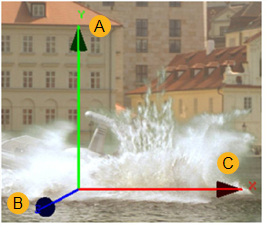

在查看 Card3D 节点的输出时，您会注意到它显示了一个用于执行空间转换的覆盖。这种覆盖通常是 “属性” 面板的更快的替代方案。下图显示了如何使用它。

• A) 拖动以平移 y 轴上的框架 (请参见 翻译元素 )。
新闻 Ctrl / Cmd 拖动以在任何轴上旋转框架 (请参见 旋转元素 )。
• B) 拖动以平移 z 轴上的帧。
新闻 Ctrl / Cmd 拖动以在任何轴上旋转框架。
• C) 拖动以平移 x 轴上的框架。
新闻 转变 拖动时，将平移约束为 x。
Press Ctrl / Cmd while dragging to rotate the frame on any axis.
|
|